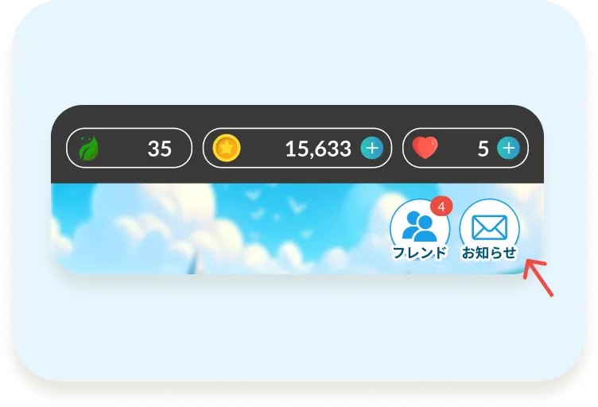

【モチスピ】アンケート・インタビューのご協力のお願い
アンケートに協力する ＞Hello~！モチベアだよ！キミの声で、モチスピをもっと楽しく学習できる英会話アプリにするために協力してほしいんだ！
【アンケート】
- 所要時間：10分程度
【インタビュー】
- 所要時間：30〜60分（オンライン）
- 実施期間：応募後、担当から日程調整の連絡をするね
※応募がたくさんあった時は、抽選になる可能性があるんだ。ご了承ください。
- 「アンケートに協力する＞」ボタンをタップ
- アンケートに回答
※回答できる回数は1人1回までとなります。
※回答期限：3/30（月）まで
※過去の配信はモチタウン>右上のメールボックスから確認できます。
